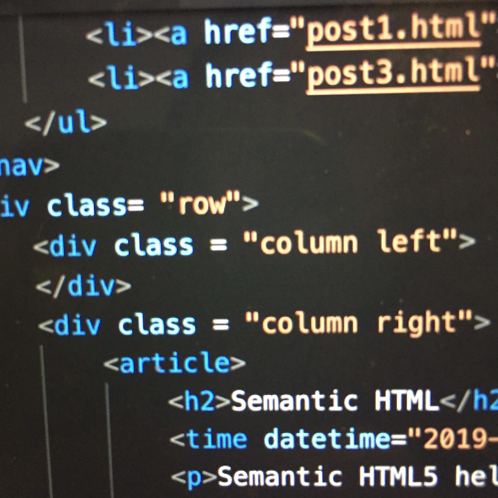

Semantic HTML
Semantic HTML5 helps clear up any confusion within the purpose behind code, and if another programmer / designer were to look at the HTML code, then they would be able to pick up from there! Elements such as header, footer, nav help specify the role of the content that is contained, and fill in the blank for what such a thing does for easy communication. For the story of my blog, I want to go for a minimal look -- something that is clear, easy for the viewer to see and understand, and is fairly straightforward to code. In the header, I have the post title along with an animation; I have the text and footer in the bottom.
In terms of visual design, it’s difficult to balance both aesthetics and the pass of optimal information. For someone who’s just a designer, they may purposefully exclude text or information in order to give a simple layout; for someone who’s just a programmer, they may strive to fill in content without the aesthetics. It’s difficult balancing these two to give a perfect site, and is the role of UI/UX designers!
